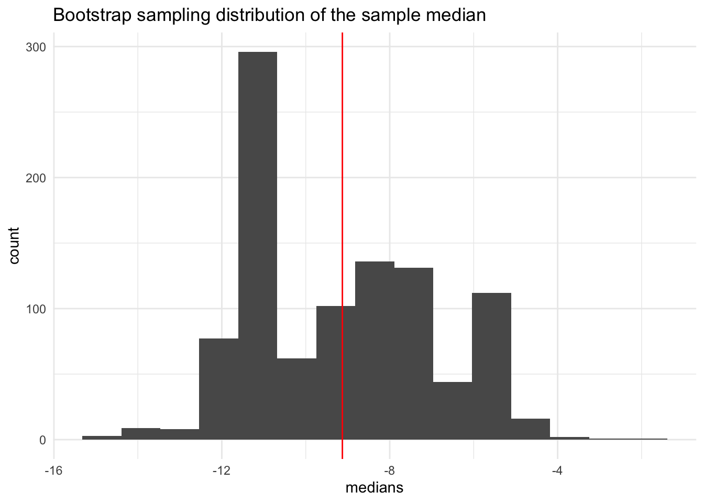
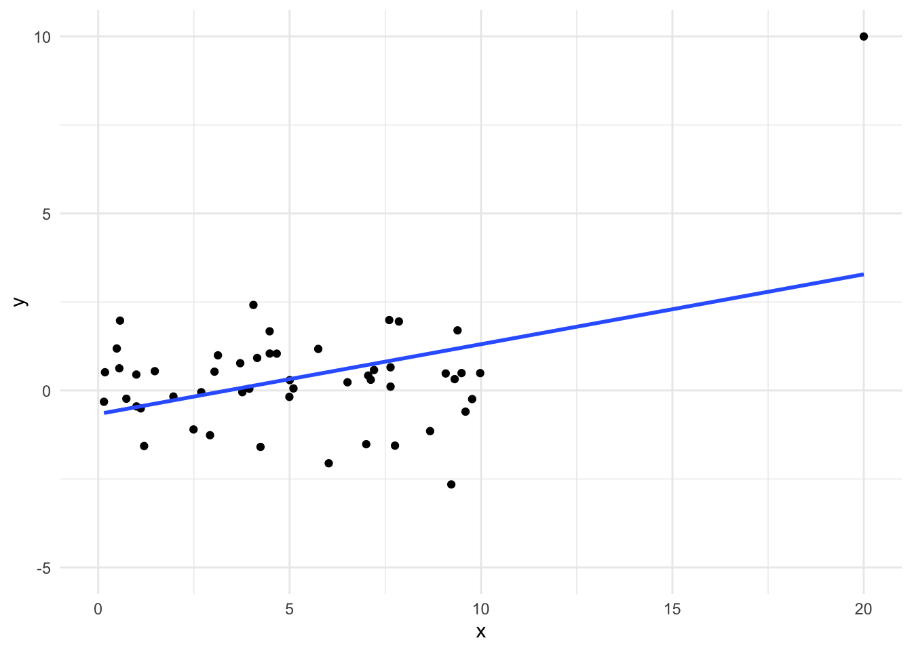

3.10 Logistic Regression
If you are interested in predicting a binary categorical variable (only 2 possible outcomes), the standard linear regression models don’t apply. If you let the two outcomes be 0 and 1, you’ll never get a straight line relationship with an x variable.
Throughout this section, we will refer to one outcome as ‘success’ (denoted 1) and ‘failure’ (denoted 0). Depending on the context of the data, the success could be a negative thing such as ‘heart attack’ or ‘20 year mortality’.
We will let \(p\) be the chance of success and \(1- p\) be the chance of failure. We want to build a model to explain why the chance of success may be higher for one group of people in comparison to another.
3.10.1 Logistic and Logit
The logistic function is an S shaped curve (sigmoid curve). For our purposes, the function will take the form
\[f(x) = \frac{1}{1 + e^{b_0 +b_1x}}\]

For any real value x, f(x) will be a value between 0 and 1. This is perfect for us since probabilities/chances should also be between 0 and 1.
In fact, we’ll let the chance of failure, \(1-p\), be modeled by this function.
\[1-p = \frac{1}{1 + e^{b_0 +b_1x}}\]With a bit of algebra and rearranging terms, we can write this in terms of \(p\), the chance of success.
\[p = \frac{e^{b_0 +b_1x}}{1 + e^{b_0 +b_1x}}\]
Let’s define one more term. The odds of success is the ratio of the probability of success to the probability of failure, \(p/(1-p)\).
With a bit more algebra and rearranging terms, we can write the above model in terms of a regression model,
\[\log\left(\frac{p}{1-p}\right) = b_0 +b_1x\] On the left hand side, we have the natural log of the odds, called the logit function. On the right hand side, we have an equation for a line. This is a simple logistic regression model.
Just like a linear regression model, we can extend this model to a multiple logistic regression model by adding additional x variables,
\[\log\left(\frac{p}{1-p}\right) = b_0 +b_1x_1+b_2x_2+b_3x_3+\cdots +b_kx_k\]
3.10.2 Fitting the Model
Based on observed data that includes responses (1 for success, 0 for failure) and predictor variables, we need to find the slope coefficients, \(b_0\),…,\(b_k\) that best fits the data. The way we do this is through a technique called maximum likelihood estimation. We will not discuss the details in this class; we’ll save this for an upper level stats class.
In R, we do this with a general linear model function, glm().
For a data set, let’s go back in history to January 28, 1986. On this day, the Challenger U.S. space shuttle took off and exploded about minute after the launch. After the fact, scientists ruled that the disaster was due to o-ring seal failure. Let’s look at experimental data on the o-rings prior to the fateful day.
require(vcd)
data(SpaceShuttle)
SpaceShuttle %>%
filter(!is.na(Fail)) %>%
ggplot(aes(x = factor(Fail), y = Temperature) )+
geom_boxplot() +
theme_minimal()
SpaceShuttle %>%
filter(!is.na(Fail)) %>%
group_by(Temperature) %>%
summarise(PercentFail = mean(Fail == 'yes')) %>%
ggplot(aes(x = Temperature, y = PercentFail)) +
geom_point() +
theme_minimal()
What is the plot above telling us about the relationship between chance of o-ring failure and temperature?
Let’s fit a simple logistic regression model to predict the chance of o-ring failure based on the temperature using the experimental data.
##
## Call:
## glm(formula = Fail ~ Temperature, family = binomial, data = SpaceShuttle)
##
## Deviance Residuals:
## Min 1Q Median 3Q Max
## -1.0611 -0.7613 -0.3783 0.4524 2.2175
##
## Coefficients:
## Estimate Std. Error z value Pr(>|z|)
## (Intercept) 15.0429 7.3786 2.039 0.0415 *
## Temperature -0.2322 0.1082 -2.145 0.0320 *
## ---
## Signif. codes: 0 '***' 0.001 '**' 0.01 '*' 0.05 '.' 0.1 ' ' 1
##
## (Dispersion parameter for binomial family taken to be 1)
##
## Null deviance: 28.267 on 22 degrees of freedom
## Residual deviance: 20.315 on 21 degrees of freedom
## (1 observation deleted due to missingness)
## AIC: 24.315
##
## Number of Fisher Scoring iterations: 53.10.3 Interpretation
Let’s take a look at these estimates from the model. What do they mean?
## # A tibble: 2 x 5
## term estimate std.error statistic p.value
## <chr> <dbl> <dbl> <dbl> <dbl>
## 1 (Intercept) 15.0 7.38 2.04 0.0415
## 2 Temperature -0.232 0.108 -2.14 0.0320If you want to get a sense of what the number -0.232 means, we need to do a bit of algebra.
Our estimated model is
\[\log\left(\frac{\hat{p}}{1-\hat{p}}\right) = b_0 +b_1x\] where \(b_0 = 15\) and \(b_1 = -0.232\).
If we imagine increasing x by 1, then we get a different set of predicted probabilities of success, \(\hat{p}^*\),
\[\log\left(\frac{\hat{p}^*}{1-\hat{p}^*}\right) = b_0 +b_1(x+1)\]
Let’s find the difference between these two equations,
\[\log\left(\frac{\hat{p}^*}{1-\hat{p}^*}\right) - \log\left(\frac{\hat{p}}{1-\hat{p}}\right) = b_0 +b_1(x+1) - (b_0 +b_1x)\] and simplify the right hand side,
\[\log\left(\frac{\hat{p}^*}{1-\hat{p}^*}\right) - \log\left(\frac{\hat{p}}{1-\hat{p}}\right) = b_1\] and then simplify the left hand side,
\[\log\left( \frac{\hat{p}^*/(1-\hat{p}^*)}{\hat{p}/(1-\hat{p})}\right) = b_1\]
Let’s exponentiate both sides,
\[\left( \frac{\hat{p}^*/(1-\hat{p}^*)}{\hat{p}/(1-\hat{p})}\right) = e^{b_1}\]
We find that \(e^{b_1} = e^{-0.232} = 0.793\) is the odds ratio based on increasing x by 1 unit (it is a ratio of odds).
If a ratio is greater than 1, that means that the denominator is less than the numerator or numerator is greater than denominator. If a ratio is less than 1, that means that the denominator is greater than the numerator or numerator is less than denominator. If the ratio is equal to one, the numerator equals the denominator (odds are equal).
In this case, we have a ratio < 1 which means that the estimated odds of o-ring failure is lower for increased temperatures (in particular by increasing by 1 degree). This makes sense since we saw that the chance of o-ring failure decrease with warmer temperatures.
3.10.4 Prediction
On January 28, 1986, the temperature was 26 F degrees. Let’s predict the chance of “success,” which is a failure of o-rings in our data context, at that temperature.
## 1
## 0.9998774They didn’t have any experimental data testing o-rings at this low of temperatures, but even based on the data collected, they predict the chance of failure to be nearly 100% (near certainty).
3.10.4.1 Hard Predictions/Classifications
These predicted chances of “success” are useful to give us a sense of uncertainty in our prediction, but how high should the predicted chance be to do “hard” predictions of “success”?
It depends.
If we used a threshold of 0.8, then we’d say that for any experiment with a predicted chance of o-ring failure 0.8 or greater, we’ll predict that there will be o-ring failure. As with any predictions, we may make an error. With this threshold, what is our accuracy (# of correctly predicted/# of data points)?
In the table below, we see that there were three data points in which we correctly predicted o-ring failure. There were 4 data points in which we erroneously predicted that it wouldn’t fail when it actually did and correctly predicted no failure for 16 data points. So in total, our accuracy is (16+3)/(16+4+3) = 0.82.
The only errors we made were false negatives; we didn’t predict failure but failure did actual happen in the experiment. In this data context, false negatives have real consequences on human lives because a shuttle would launch and potentially explode because we had predicted there would be no o-ring failure.
The false negative rate is the number of false negatives divided by the false negatives + true positives (denominator should be total number of experiments with o-ring failures). With a threshold of 0.80, our false negative rate is 4/(3+4) = 0.57.
A false positive (predicting failure when it doesn’t happen) would delay launch but have minimal impact on human lives.
The false positive rate is the number of false positives divided by the false positives + true negatives (denominator should be total number of experiments with no o-ring failures). With a threshold of 0.80, our false positive rate is 0/16 = 0.
augment(model.glm, type.predict ='response') %>%
mutate(predictOFail = .fitted >= 0.8) %>%
count(Fail,predictOFail)## # A tibble: 3 x 3
## Fail predictOFail n
## <fct> <lgl> <int>
## 1 no FALSE 16
## 2 yes FALSE 4
## 3 yes TRUE 3What if we used a lower threshold to reduce the number of false negatives? Let’s lower it to 0.25 so that we predict o-ring failure more easily. Let’s find our accuracy: (10+4)/(10+3+6+4) = 0.61. Worse than before, but let’s check false negative rate: 3/(3+4) = 0.43. That’s lower. But now we have a fairly high false positive rate: 6/(6+10) = 0.375. So of the experiments with o-ring failure, we predicted wrong 37.5% of the time.
augment(model.glm, type.predict ='response') %>%
mutate(predictOFail = .fitted >= 0.25) %>%
count( Fail, predictOFail)## # A tibble: 4 x 3
## Fail predictOFail n
## <fct> <lgl> <int>
## 1 no FALSE 10
## 2 no TRUE 6
## 3 yes FALSE 3
## 4 yes TRUE 43.10.5 Model Evaluation
In deciding whether a logistic regression model is a good and useful model, we need to consider the accuracy, the false positive rate and the false negative rate. Depending on the context, we may focus on maximizing the overall accuracy or we may focus on minimizing the false negative rate or minimizing the false positive rate.
3.10.6 Alternative Classification Models
Logistic regression is a very useful model to predict a binary outcome that is an extension of linear regression. However, it has its limitations. We are assuming a linear relationship between explanatory variables and the log odds. This is hard to check because we don’t have a variable for odds that we could then quickly plot.
Other methods out there are more flexible but also more complex. Sometimes for a task, complex is not necessary: see https://www.huffingtonpost.com/2014/02/10/klemens-torggler-evolution-door_n_4762261.html.
Classification Trees can predict a binary outcome and choose the variables that are most important by recursively partitioning the data into groups that are more similar in terms of the outcome as well as in chosen predictor variables.
Random Forests are a collection of classification tress that are more stable than one classification tree.
Boosted Trees are classification trees that are sequentially created to target the errors from the last tree.
Neural Networks are a type of classification algorithm that creates new features based on the original data that are the best predictors of the outcome.
Take Machine Learning to learn more about these methods.
##Major Takeaways
All models are wrong, but some are useful and fair.
We want a model with small residuals (prediction errors).
To determine if a model is useful and fair, we study what is left over (the residuals).
We use models to describe phenomena by interpreting slope estimates. Make sure you are talking about the average or predicted outcome! If you have multiple variables, you keep all others fixed (if possible).
We also use models to prediction values, but be careful about predicting outside the observed range of our explanatory (X) variables. That is called extrapolation.